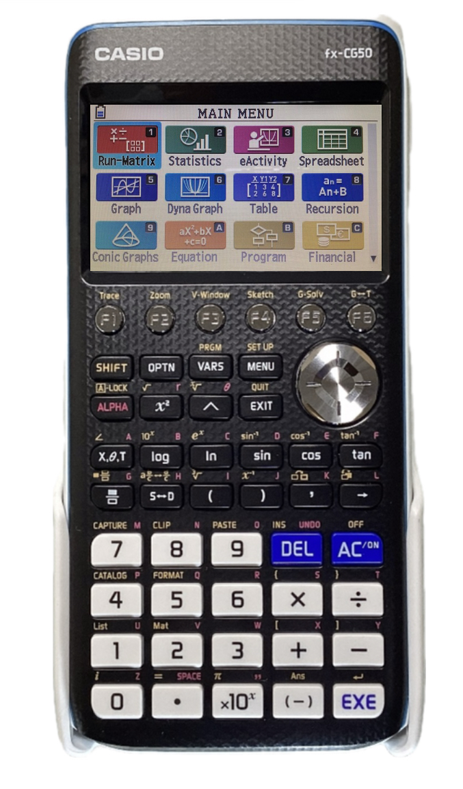

前回のHP Prime G2に引き続いてグラフ電卓のレビューです。
今、急ピッチで執筆をしていますが、読みやすさは大丈夫でしょうか。
意見があれば是非ホームページのお問い合わせフォームからどうぞ。
ということで、今回のグラフ電卓は日本CASIOのフラッグシップ関数電卓です。
グラフが描けますが、全体的なレビューをしていこうと思います。

まず、インターフェースについては少し難し過ぎると思います。
グラフ電卓を触ったことがある人でも煩雑な気がします。
ファンクションキー中心の操作や文字で入力できない関数はもはや時代遅れです。
HP Primeでは文字で関数を入力できますし、持っていないですがTI-nSPIREもできるそうです。
しかも、ハードウェアが良いものとも言い切れないのです。
キーの感触は軽快で心地の良いものですが、反応しないこともありストレスが溜まる面もあります。
また他社フラッグシップのような強力な入力装置を搭載しないのです。
HPはタッチパネル、TIはトラックパッド。
こういう突出したものがなくてはやはり戦力として劣ります。
日本では発売されていませんが、海外ではfx-CG400/500がフラッグシップです。
これらの機種には対抗2社には劣るもののタッチパネルを搭載し、CASを搭載します。
CASというのは数式処理システム、平たく言うと文字式をそのまま扱えるシステムです。
やはり日本では売り込む気がない機種なんでしょうか。
これが、海外でも対抗機種はTI-84シリーズとされている理由です。
日本国内でも別に海外のものを取り寄せれば良い程度のものです。
ちなみに、プログラム機能は結構終わっています。
?→A:?→B:AB÷(A+B)
このコードが2本の並列の合成抵抗(電気)を求めるプログラムですが、意味が分かりますか？
これでゲームを作る人の気が知れません。